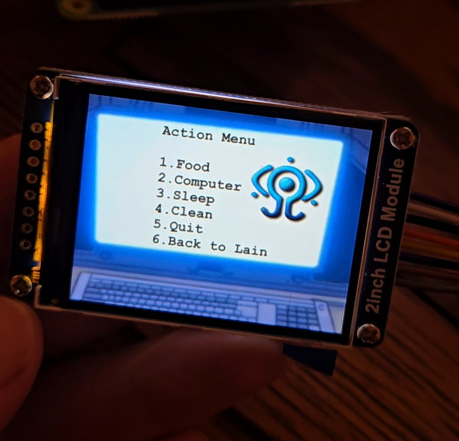

Virtual Friend
4 losers

This is a virtual friend style game I made, inspired by the Tamagotchis of the early 2000's and other "virtual pet" style games.
It's not very fun to play but I learned a lot making it
The friend in question is Lain from the 1998 anime "Serial Experiments Lain".
I made simple animations out of screenshots from the anime, isolating Lain and segmenting the body where I would make it move


I've never tried animating like this before but it turned out pretty good I think. Nice for me because I suck at drawing and I just use a trackpad on my computer so it can be difficult to get details right. And I didn't need much motion, just enough to add a bit of life/make simple idle animations. Here is the result

Looking closely it looks a bit messy, but considering my display is 2 inches-240x320, it doesn't really matter
The case is an old Zenith tv remote I found in the e-waste bin at the dump. I've reused some of the button caps and placed my own switches inside. The remote was really gross when I found it so I gutted it and gave it a scrub with a toothbrush lol.


I used the nice hard plastic case of an old cassette tape, cut to size with my dremel, to mount my switches on. Programming a power button same way as I did on my VHS game rig. And buttons 1-9 to the GPIO pins.

I love this menu I made. Its a screenshot from the anime of the NAVI computer I just edited the screen for my own actions menu.
I also included a menu "NAVI media player" you can access from the main menu which lets you play all 13 episodes of the anime. Though framebuffering through SPI seems to
have absolutely god awful frame rates. I'm still experimenting on how to improve this and make it smoother. But it is watchable anyhow. In the future if I were to do something like this again where I need to render video I would abandon the idea of SPI displays and just go with an HDMI or something
but they are a lot bigger/clunkier
I also experimented with displaying my animations directly into the linux terminal but the few libraries I tried seemed to have the limitation of it turning out VERY pixely. It is kind of a vibe though, especially when you think about how the old Tamagotchis used to look. It was cool to try anyways and I might do something like this for another project.


Now that the code is programmed and everything is wired up it would be a breeze to add in other characters or some of my own designs, and I have set it up that it can be added in on a "Friend Select" menu right when you boot up. Not sure if I ever will though. I do think a virtual friend Carl from "Aqua Team Hunger Force" would be 2wicked.